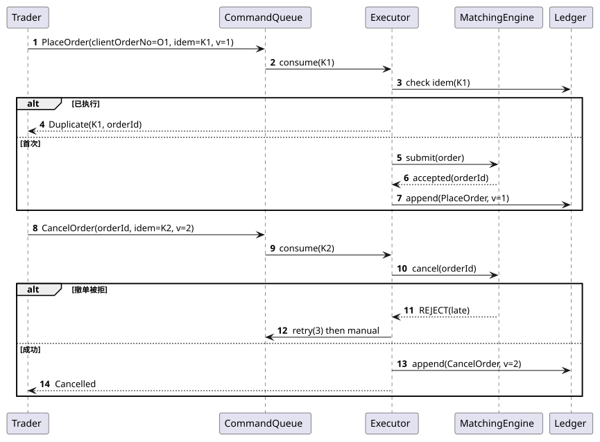

编辑器要支持撤销。如果每次输入都直接改字符串，撤销时根本不知道该退到哪。命令模式把“一次编辑”封装成对象：执行和撤销成对出现，历史栈自然可回放。
坏写法是直接改：
text[len++] = 'H';
text[len++] = 'i'; /* 想撤销？已经改完了 */没有记录“改之前是什么”，也没有“反向操作”，撤销只能靠整份快照，代价大且粒度粗。
命令把每次编辑变成 {kind, ch}：执行时改文本，撤销时做反向。历史栈里存命令，不存整份文本。
左边是调用者，中间是命令历史，右边是编辑器。
C 版命令是 {kind, ch} 的小结构，历史用数组；C++ 版每个命令是对象，历史用 vector<unique_ptr>。
/* 命令 · 编辑器撤销
* gcc -std=c11 -Wall -Wextra command.c -o command
*/
#include <stdio.h>
#include <string.h>
typedef struct { char text[64]; int len; } editor_t;
typedef struct { int kind; char ch; } cmd_t; /* 0=追加 1=删除 */
static void apply(editor_t *e, cmd_t c)
{
if (c.kind == 0 && e->len < 63) e->text[e->len++] = c.ch, e->text[e->len] = 0;
else if (c.kind == 1 && e->len > 0) e->text[--e->len] = 0;
}
static void undo(editor_t *e, cmd_t c)
{
if (c.kind == 0) { if (e->len > 0) e->text[--e->len] = 0; }
else { if (e->len < 63) e->text[e->len++] = c.ch, e->text[e->len] = 0; }
}
int main(void)
{
editor_t e = { "", 0 };
cmd_t history[16];
int n = 0;
cmd_t a = { 0, 'H' }, b = { 0, 'i' }, c = { 0, '!' };
apply(&e, history[n++] = a);
apply(&e, history[n++] = b);
apply(&e, history[n++] = c);
printf("输入三个命令后：\"%s\"（len=%d）\n", e.text, e.len);
for (int i = 0; i < 2; i++) {
undo(&e, history[--n]);
printf("撤销一步：\"%s\"\n", e.text);
}
return 0;
}输入三个命令后："Hi!"（len=3） 撤销一步："Hi" 撤销一步："H"
// 命令 · 编辑器撤销
// g++ -std=c++17 -Wall -Wextra command.cpp -o command_cpp
#include <cstdio>
#include <memory>
#include <string>
#include <vector>
class Editor {
public:
std::string text;
};
class Command {
public:
virtual ~Command() = default;
virtual void execute(Editor& e) = 0;
virtual void undo(Editor& e) = 0;
};
class Append final : public Command {
public:
explicit Append(char c) : c_(c) {}
void execute(Editor& e) override { e.text.push_back(c_); }
void undo(Editor& e) override { if (!e.text.empty()) e.text.pop_back(); }
private:
char c_;
};
class Delete final : public Command {
public:
void execute(Editor& e) override {
if (!e.text.empty()) { last_ = e.text.back(); e.text.pop_back(); }
}
void undo(Editor& e) override { e.text.push_back(last_); }
private:
char last_ = 0;
};
class Invoker {
public:
void run(std::unique_ptr<Command> c, Editor& e) {
c->execute(e);
history_.push_back(std::move(c));
}
void undo(Editor& e) {
if (history_.empty()) return;
history_.back()->undo(e);
history_.pop_back();
}
private:
std::vector<std::unique_ptr<Command>> history_;
};
int main()
{
Editor e;
Invoker inv;
inv.run(std::make_unique<Append>('H'), e);
inv.run(std::make_unique<Append>('i'), e);
inv.run(std::make_unique<Append>('!'), e);
std::printf("输入三个命令后：\"%s\"\n", e.text.c_str());
inv.undo(e);
std::printf("撤销一步：\"%s\"\n", e.text.c_str());
inv.undo(e);
std::printf("撤销两步：\"%s\"\n", e.text.c_str());
return 0;
}输入三个命令后："Hi!" 撤销一步："Hi" 撤销两步："H"
| 角色 | C 版 | C++ 版 | 差别意味着什么 |
|---|---|---|---|
| 命令形态 | {kind, ch} 结构 | 多态 Command 对象 | C 用数据描述，C++ 用类型 |
| 历史容器 | 固定数组 + 计数 | vector<unique_ptr> | C 版容量固定，真实实现要动态 |
| 撤销 | undo() 反向操作 | undo() 虚函数 | 必须与 execute 严格配对 |
| 谁改状态 | 接收者 editor_t | 接收者 Editor | 命令本身不存业务状态 |
参考教程：refactoringguru.cn
生产实例：交易下单命令与撤销补偿
交易系统把“下单/撤单”封装成命令：命令带 clientOrderNo、幂等键、版本号，进持久化队列后由执行器消费。撤单不是删记录，而是产生一条反向命令，两条命令都留在账本里，审计可回放。

@startuml
autonumber
participant "Trader" as T
participant "CommandQueue" as Q
participant "Executor" as X
participant "MatchingEngine" as M
participant "Ledger" as L
T -> Q: PlaceOrder(clientOrderNo=O1, idem=K1, v=1)
Q -> X: consume(K1)
X -> L: check idem(K1)
alt 已执行
X --> T: Duplicate(K1, orderId)
else 首次
X -> M: submit(order)
M --> X: accepted(orderId)
X -> L: append(PlaceOrder, v=1)
end
T -> Q: CancelOrder(orderId, idem=K2, v=2)
Q -> X: consume(K2)
X -> M: cancel(orderId)
alt 撤单被拒
M --> X: REJECT(late)
X -> Q: retry(3) then manual
else 成功
X -> L: append(CancelOrder, v=2)
X --> T: Cancelled
end
@enduml